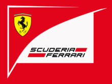

法拉利车队是法拉利汽车公司的赛事部门。自1929年建队以来，这支车队参加一级方程式赛事的同时，也参加一些其他赛车比赛，包括运动车比赛。从1950年一级方程式赛大奖赛建立以来，这是赛事历史上现存最古老也是最成功的车队。作为制造商，法拉利总共16次赢得车队冠军。
法拉利车队由恩佐·法拉利创建，最初使用阿尔法·罗密欧生产的赛车进行比赛，1947年法拉利已经开始自己生产汽车。在F1之外，法拉利最重要的胜利包括世界运动车锦标赛，勒芒24小时耐力赛，多纳顿24小时耐力赛，赛百灵12小时赛，大房车赛，汤加·佛罗里奥、迈尔·米格里亚和卡雷拉·派拿美利坚纳公路赛。
阿尔伯托·阿斯卡里，胡安·曼努尔·方吉奥，麦克·霍索恩，菲儿·希尔，约翰·苏提斯，尼基·劳达，朱迪·夏克特，迈克尔·舒马赫和基米·莱库宁总共为车队赢得了15次年度车手冠军。
车队2018赛季的两位车手是基米·莱科宁（Kimi Raikkonen）塞巴斯蒂安·维特尔（Sebastian Vettel）。
| 中文名 | 法拉利F1车队 | 首次参赛 | 1950年5月22日 |
| 外文名 | Scuderia Ferrari | 夺冠次数 | 16次 |
| 归 属 | 意大利，马拉内罗 | 车手冠军 | 15次 |
车队英文全名：Scuderia Ferrari
总部：意大利，马拉内罗
首次参赛：1950年5月22日
1961,1964,1975,1976,1977,1979,1982,1983,1999,2000,2001,2002,2003,2004,2007,2008
1952,1953：阿尔博特·阿斯卡里(Alberto Ascari)，意大利；
1956：胡安·曼努尔·范吉奥(Juan Manuel Fangio)，阿根廷；
1958：迈克·豪索恩(Mike Hawthorn)， 英国；
1961：菲尔·希尔(Phil Hill)，美国；
1964：约翰·苏蒂斯（John Surtees)，英国；
1975,1977：尼吉·劳达(Niki Lauda)，奥地利；
1979：约迪·舒克特(Jody Scheckter)，南非；
2000~2004：迈克尔·舒马赫(Michael Schumacher)，德国；
2007：基米·莱科宁(Kimi Raikkonen)， 芬兰
【截止2015年英国站】
参赛次数：899（897次起步）
分站冠军：222
杆位次数：207
单圈最快：234
上颁奖台次数：513
首次分站冠军：1951年英国大奖赛（银石赛道）、冈萨雷斯(阿根廷)
最近获胜：2018年巴林国际赛道、维特尔
中文名：塞巴斯蒂安·维特尔
外文名：Sebastian Vettel
国籍：德国民族：德意志
出生地：德国黑彭海姆
出生日期：1987年7月3日
身高：1.76m
体重：62KG
塞巴斯蒂安·维特尔（出生于1987年7月3日）来自于德国，目前效力于法拉利车队。他和车队的合同将持续到2017年底。他是一位四届世界冠军，曾在2010年、2011年、2012年和2013年效力红牛车队时夺得世界冠军，是有史以来最成功的F1车手之一。
维特尔在2009年首次代表红牛车队出场，那个赛季结束时，维特尔成为了历史上最年轻的年度亚军。一年之后，他以23岁的年纪成为了有史以来最年轻的世界冠军。同年，他也帮助红牛车队首夺制造商世界冠军。在首冠过后，他连续三年卫冕成功，成为了最年轻的两届、三届和四届世界冠军。2014年底，维特尔离开红牛车队，结束了他和这家公司的漫长合作，在激活条款提前终止他和红牛车队的合同之后，他在2015赛季转投法拉利。
维特尔同时还保持着F1历史上多项“最年轻”纪录，包括：最年轻的大奖赛周末参赛车手（直到马克思·维斯塔潘参加2014日本大奖赛被打破），最年轻积分车手（直到达尼·科维亚特在2014澳大利亚大奖赛上积分被打破），最年轻比赛领跑者，最年轻杆位车手，最年轻分站胜利获得者（直到2016年西班牙站，加泰罗尼亚赛道，被小维斯塔潘打破）。目前，他的杆位数量仅次于德国人迈克尔·舒马赫和埃尔顿·塞纳，历史排名第三，而他的分站胜利场次则历史排名第四。
国籍 德国
车队 法拉利
车号 5
参赛 148场（148次发车）
年度冠军 4（2010,2011,2012,2013）
分站胜利 40场
领奖台 72次
总积分 1753分
杆位 45
最快圈速 24
首场比赛 2007美国大奖赛
首次获胜 2008意大利大奖赛
最近获胜 2015匈牙利大奖赛
最近比赛 2015英国大奖赛
2014赛季名次 5（167分）
中文名：基米·莱科宁
外文名：Kimi Matias Raikkonen
国 籍：芬兰
出生地：Espoo
出生日期：1979年10月17日
身 高：175cm
体 重：62kg
基米-马蒂亚斯·莱库宁（出生于1979年10月17日），昵称为“冰人”，是一位芬兰车手，目前效力于法拉利车队。
在F1参赛九个赛季，包括赢得2007年一级方程式大奖赛年度车手冠军之后，他在2010年和2011年参加了世界拉力锦标赛。2012年，他回到了F1，效力于路特斯车队，并在2013年继续留在该队。2013年9月11日，法拉利宣布莱库宁从2014年开始效力跃马，双方签下两年合同。
在F1参赛九个赛季，包括赢得2007年一级方程式大奖赛年度车手冠军之后，他在2010年和2011年参加了世界拉力锦标赛。2012年，他回到了F1，效力于路特斯车队，并在2013年继续留在该队。2013年9月11日，法拉利宣布莱库宁从2014年开始效力跃马，双方签下两年合同。
莱库宁在2007年转会到法拉利车队，以每年5100万美元的工资成为了赛车世界最高薪的车手。转会到法拉利，也帮助他赢得了自己职业生涯第一个年度世界冠军头衔，一分之差击败了迈凯伦车手刘易斯·汉密尔顿和费尔南多·阿隆索，同时成为了极少数效力法拉利第一个赛季就能赢得年度冠军的车手之一。2008年，他第二次追平了单赛季最快圈数次数的纪录。然而，由于法拉利极度渴望得到阿隆索和他的桑坦德银行赞助，莱库宁在2009年底离开了法拉利车队，也离开了这项运动。随后，他进入了世界拉力锦标赛，2010年效力于雪铁龙青年车队参赛，驾驶一辆雪铁龙C4 WRC赛车参赛。除了参加拉力赛，莱库宁也尝试了纳斯卡，在世界卡车系列赛中代表凯利·布什赛车队上演了首秀。莱库宁在2012年回到了F1，和路特斯车队签下了两年合约。在他的回归赛季，他赢得了2012年阿布扎比大奖赛的胜利。稳定的表现帮助他最终在年度车手积分榜上排名第三。
2008年，莱库宁是仅有的两位进入《福布斯》杂志最富有100位名流的F1车手之一，另一位是费尔南多·阿隆索。莱库宁在2008年的前100名帮上排名第36，前一年他则排在第41位。在同一张榜单上，他在收入最高的名流中排名第26为，是收入最高运动员中的第五位，仅次于泰格·伍兹、大卫·贝克汉姆、迈克尔·乔丹和菲尔·麦克尔森。2009年，莱库宁成为仅次于伍兹的世界收入第二高运动员。
国籍 芬兰
车队 法拉利
车号 7
参赛 222场（221次发车）
年度冠军 1（2007）
分站胜利 20场
领奖台 78次
总积分 1100分
杆位 16
最快圈速 42
首场比赛 2001澳大利亚大奖赛
首次获胜 2003马来西亚大奖赛
最近获胜 2013澳大利亚大奖赛
最近比赛 2015英国大奖赛
2014赛季名次 12（55分）
一级方程式大奖赛是世界上最高水平的赛车赛事，在这项赛事中，法拉利车队是获胜最多的车队，曾16次赢得年度车队冠军和15赢得年度车手桂冠。法拉利公司1947年由恩佐·法拉利创建，他即刻意识到了在F1赛场亮相的重要性，因为在赛车运动中获胜所带来的信誉，将会是先进技术从赛道走向量产车的优势所在。
事实上，法拉利在1950年的摩纳哥大奖赛上演绎了F1首秀，这亦是F1的处子赛季，此后法拉利从未缺席。因而，时至今日，法拉利车队已经参加了870场大奖赛，并赢得了其中的221场。第一场分站胜利得追溯到1951年的英国大奖赛，由阿根廷车手何塞·弗罗伊兰·冈萨雷斯获得。下一年，意大利车手阿尔伯托·阿斯卡里为法拉利赢得了队史第一个年度车手冠军，1953年卫冕成功。
每个时代最好的车手们都曾为法拉利效力，从法里纳到阿斯卡里，还有传奇车手胡安·曼努尔·方吉奥，他在1956年和法拉利一起加冕。还有约翰·苏堤斯，时至今日依然是唯一在两轮摩托车和四轮赛车双双赢得世界冠军的唯一，此后是尼基·劳达，两次在法拉利赢得世界冠军，以及无法令人忘怀的车迷们最爱——吉列斯·维勒纽夫。
进入新千年后，法拉利来自德国的冠军车手迈克尔·舒马赫携手走向成功，成就了这项运动史上最强组合——为法拉利带来了五个年度车手冠军和六个年度车队冠军。舒马赫之后，法拉利继续着胜利的道路，2007年基米·莱库宁赢得了世界冠军，数年里法拉利也一直是桂冠的有力竞争者。
车队冠军次数：16次。1961，1964，1975，1976，1977，1979，1982，1983，1999，2000，2001，2002，2003，2004，2007，2008
车手冠军次数：15次。1952年、1953年：阿尔博特-阿斯卡里（意大利；1956年：胡安·曼努·方吉奥(阿根廷）；1958年：麦克·豪索恩（英国）；1961年：菲尔-希尔（美国）；1964年：约翰·苏蒂斯（英国）；1975年：尼基·劳达(奥地利）；1977年：尼吉·劳达（奥地利）；1979年：约迪·舒克特（南非）；2000年—2004年：迈克尔·舒马赫(德国）；2007年：基米·莱库宁（芬兰）；